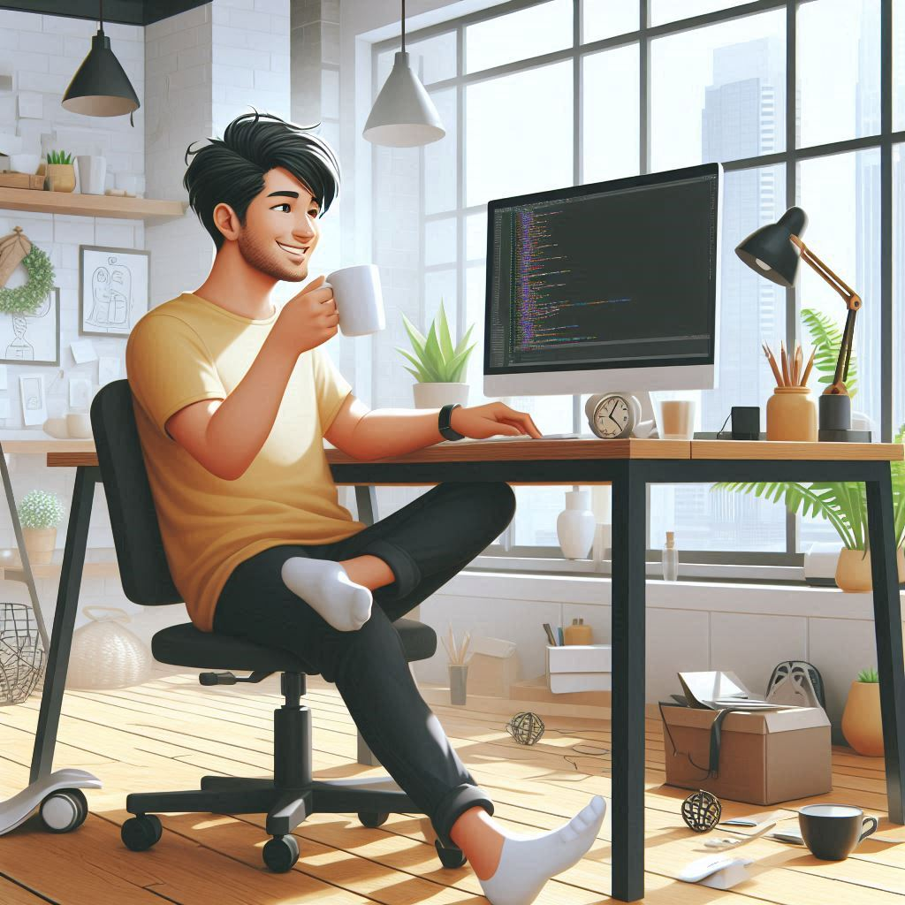

Sou Roger, Desenvolvedor!
Sobre mim:
Atualmente, resido na cidade de São Carlos e estou cursando Física Computacional pela USP. Concluí o curso técnico em Desenvolvimento de Software na Etec enquanto ainda estava no ensino médio. Desde então, mantenho um forte interesse por tecnologia, o que me motivou a seguir minha formação na Universidade de São Paulo (USP), focando em Ciência e Tecnologia.
Algumas das minhas redes sociais
<--
Projetos:
Participei do projeto RUFUS ICMC, comandando pela Professora Dra. Kamila Rios da Hora Rodrigues, minhas competências eram fazer manutenção do front-end do site: rufus.icmc.usp.br/ usando tecnologias como React
Competências:
- HTML
- CSS
- JavaScript
- React
- Python
- Java
- SQL